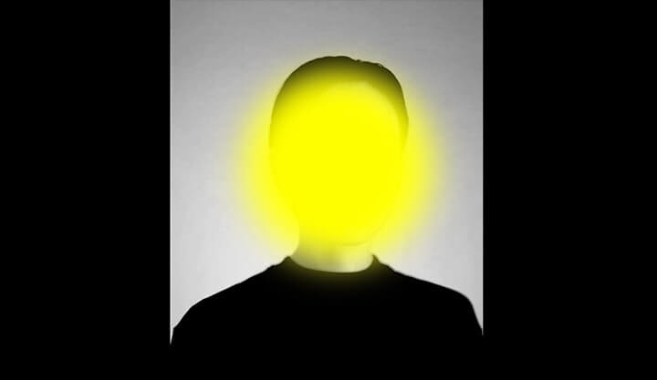

Pour cet exercice, vous devez rendre une photo d’une personne anonyme grâce aux filtres CSS.
Aperçu du résultat 👇

CRÉDIT PHOTO
Aiony Haust, Unsplash
Matériel
Couleurs 🎨
#ffff00
Médias
Personne
Requis
Créez-vous un pen et attribuez-y un fond noir.
La photographie de personne doit avoir une largeur de 400px et être centrée horizontalement dans la page ↔️.
Transformez ensuite la photographie de sorte qu'elle soit en noir et blanc et que ses tons soient accentués au point au son chandail devienne noir pur.
Ajoutez un cercle jaune 🟡 de 250x250px par-dessus le visage de ladite personne afin de masquer son identité. Floutez ensuite ce cercle.
Le cercle doit rester en tout temps par-dessus le visage, même lorsque la page est redimensionnée.
Notes de cours 📚
Filtres
blur, contrast, grayscale, sepia, etc.